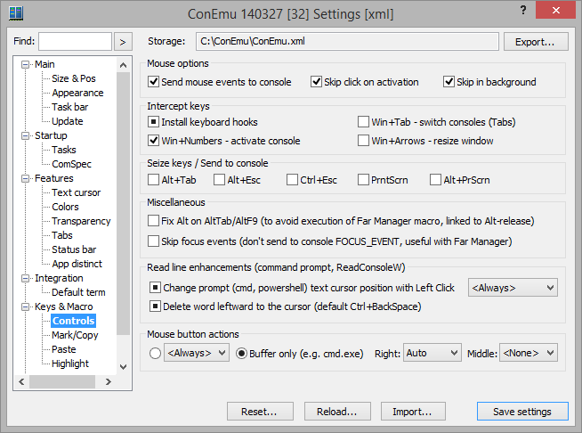

Send mouse events to console Uncheck this to stop sending mouse events to console, mouse will be processed by ConEmu internally (text selection, for example)
Skip click on activation Skip mouse button (left/right/middle) click, while activating window
Skip in background Skip mouse move events, while ConEmu is not foreground window
Install keyboard hooks Allows interception of Win+Number, Win+Arrows, Alt+Esc, Alt+Tab, etc.
Win+Tab - switch consoles (Tabs) Disable Windows 7 Aero switch (Win+Tab) when ConEmu in foreground
Win+Numbers - activate console Enables switching of tabs (30 consoles) by their numbers (1,2,...,9,10,11,...). ‘Host-key’ is ‘Win’ key, by default.
Win+Arrows - resize window Resize ConEmu window with arrow keys
Alt+Tab When checked, You can use "Alt+Tab" in Far internally. Warning! This blocks ability of switching to another window
Alt+Esc When checked, You can use "Alt+Esc" in Far internally
Ctrl+Esc When checked, You can use "Ctrl+Esc" in Far internally
PrntScrn When checked, You can use "PrintScrn" in Far internally
Alt+PrScrn When checked, You can use "Alt+PrintScrn" in Far internally
Fix Alt on AltTab/AltF9 (to avoid execution of Far Manager macro, linked to Alt-release) When You set a macro on Alt (RAlt) it can unexpectedly activates on AltTab or AltF9. This issue can be fixed by sending to console Control depress before Alt release.
Skip focus events (don't send to console FOCUS_EVENT, useful with Far Manager) Don't send focus events to console to disable autoclosing of fast search dialog in panels
Change prompt (cmd, powershell) text cursor position with Left Click 3rd-state means ‘try to detect if console is in ReadConsole’, if you want to use this with bash - turn checkbox to ‘On’ (don't use third state)
Delete word leftward to the cursor (default Ctrl+BackSpace) Delete word leftward to the cursor (does not work in Far), 3rd-state means ‘try to detect if console is in ReadConsole’, if you want to use this with bash - turn checkbox to ‘On’ (don't use third state)
RTEXT
RTEXT